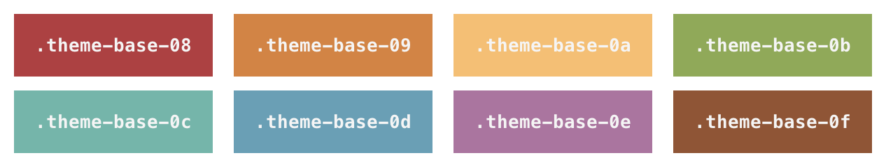

Theme-Test
Viele Features und BeispieleDiese Seite ist, wie das Theme selbst, Work in Progress!
Das Theme basiert auf Hyde von Mark Otto, das von Steve Francia für Hugo portiert und von mir unter der Haube stark angepasst und umstrukturiert wurde, um neue Features von Hugo zu implementieren.
Konfiguration
Farbschema
Wichtigster Anpassungspunkt für das Theme ist das verwendete Farbschema. Es kann in config.toml gesetzt werden und die folgenden Werte annehmen:

Die Farbwerte folgen dabei base16, das auch für das Sourcecode-Highlighting als Stylesheet verwendet wird.
config.toml
In der config.toml-Datei können neben den Standard-Eigenschaften wie etwa dem Titel folgende Eigenschaften festgelegt werden:
theme: Theme-Farbe (siehe oben). Wirkt sich auf CSS, Farb-Meta-Tag und Cookie-Consent Farbgebung aus.description: Wird in der Seitenleiste unter dem Titel angezeigt.minWordCountForToc: Mindestanzahl an Wörtern, sodass, falls vorhanden, eine Table of Contents auf PCs und Laptops angezeigt wird. Standardwert ist 1000, kann im Frontmatter übersteuert werden (siehe unten).cookieConsent: Auftruesetzen, um Cookie-Meldung zu aktivieren. MitcookieConsentPolicyLinkkann der Link konfiguriert werden.piwik: Auftruesetzen, um Piwik/Matomo zu aktivieren. MitpiwikBaseUrlundpiwikSiteIdkann die Einbindung konfiguriert werden.
Außerdem verwendet das Theme „Related Content“ und ein über menu.main konfigurierbares Hauptmenü.
Übersetzung ist zum jetzigen Zeitpunkt nicht integriert.
Frontmatter
Das folgende Beispiel zeigt ein YAML Frontmatter
title: "„Make America Great Again“"
subtitle: "Über die Wahlen in den USA – East Side Story, Teil 3"
date: "2016-11-05"
summary: true
categories: "Politik und Gesellschaft"
series: "East Side Story"
neologismus: "16-10"
resources:
- src : "trump.jpg"
name : "header"
params:
title: "Bild Trump"
link: "https://www.flickr.com/photos/nathancongleton/26535826426/"
author: "Nathan Congleton"
license: "by-nc-sa 2.0"
- src: "hillary.jpg"
params:
title: "Bild Clinton"
link: "https://www.flickr.com/photos/number7cloud/25664027770/"
author: "Lorie Shaull"
license: "by-nc-sa 2.0"Das zusätzliche, optionale Feld subtitle wird als Untertitel dargestellt. Sowohl categories als auch series können jeweils bis zu einen Wert beinhalten. Das Feld neologismus beinhaltet den Code der Ausgabe des Neologismus, in dem der Artikel veröffentlicht wurde. Dieser Link wird unter dem Artikel dargestellt, gemeinsam mit dem endmatterText und den automatisch erstellten Copyright-Angaben zu den Bildern innerhalb der resources (aktuell werden nur CC-Lizenzen unterstützt). Das (optionale) Bild name: header wird automatisch als Hero-Bild des Beitrags verwendet.
Wird der Parameter summary auf true gesetzt, wird auf der Startseite nur die Zusammenfassung der Seite angezeigt, die entweder automatisch generiert wird oder manuell definiert wird, indem der Artikel verwendet. Ansonsten wird der volle Artikel dargestellt. Dieses Verhalten wurde gewählt, weil die automatisch generierten Zusammenfassungen von Hugo in der Regel schlecht sind.
Auf PCs und Laptops mit mehr als 1600px Breite wird automatisch ein Inhaltsverzeichnis angezeigt, wenn der Post mehr Wörter besitzt, als in der Site Config eingestellt ist (siehe oben). Mittels showToC kann dieses Verhalten jedoch überschrieben werden.
Shortcodes
Das Theme beinhaltet einige Shortcodes zum Layout komplexerer Inhalte. (Wegen der Limitationen im Rendering sind die Shortcodes in den Code-Beispielen jeweils mit zusätzlichen Leerzeichen versehen.)
Etwaig benötigter JavaScript wird nur geladen, wenn entsprechende Shortcodes auf einer Seite verwendet werden.
Abbildungen
Abbildungen funktionieren wie der normale figure-Shortcode in Hugo. Wichtiger Unterschied: Die Bilder müssen in den resources der Seite spezifiziert sein, es wird Lightbox2 verwendet, um eine Diashow der Originalbilder zu ermöglichen und die Bilder werden automatisch skaliert. Standardmäßig wird eine Breite von 300px verwendet, was zur Darstellung in der jeweiligen CSS-Klasse float-right bzw. float-left führt. Mit dem Parameter option kann der Skalierbefehl .Resource jedoch konfiguriert werden, etwa mit option="640x". Es wird außerdem ein srcset verwendet, um bei Bedarf höher aufgelöste Bilder darzustellen. Hier kann mit optionX2 der Parameter konfiguriert werden. Wie in der Standard figure wird die caption mit markdownify formatiert, was hier mittels markdownifyCaption="off" abgeschaltet werden kann.
{{ < figure src="img/2nf1.jpg" caption="I would walk 500 miles…" class="float-right" > }}Photosets
Um größere Mengen an Bildern darstellen zu können, kann der photoset-Shortcode wie folgt verwendet werden (mit vielen Eigenschaften von figure):
{{ < photoset > }}
{{ < photoset-row > }}
{{ < photoset-item src="img/amish.png" > }}
{{ < photoset-item src="img/hopewell_out.png" > }}
{{ < /photoset-row > }}
{{ < photoset-row > }}
{{ < photoset-item src="img/phili_small.png" > }}
{{ < photoset-item src="img/liberty.png" > }}
{{ < /photoset-row > }}
{{ < photoset-row > }}
{{ < photoset-item src="img/china.png" > }}
{{ < photoset-item src="img/bay.png" > }}
{{ < /photoset-row > }}
{{ < /photoset > }}Auch hier müssen die Bilder aus den resources stammen, werden automatisch in eine Lightbox gepackt und skaliert. Außerdem werden die Bilder algorithmisch so dargestellt, dass jede Zeile stets die volle Breite einnimmt, wobei alle Bilder in der Zeile gleich hoch sind. Dabei wurde einem Tutorial von Coding Design gefolgt.
Mathematik
Das Theme unterstützt Mathematik in der aus LaTeX bekannten Notation, unterstützt durch KaTeX.
Der maths-Shortcode inline:
\(\frac{a}{b}\)
{{ < maths "\frac{a}{b}" /> }}Der maths-Shortcode im Block:
{{ < maths > }}
\left(
\begin{array}{c}
n \\
r
\end{array}
\right) = \frac{n!}{r!(n-r)!}
{{ </ maths > }}UML-Diagramme
Das Theme rendert UML Diagramme mit nomnoml. Aktuell werden die Diagramme stets zentriert dargestellt. Ist der Parameter zoomable gesetzt, wird durch Klicken das Diagramm auf voller Breite dargestellt. Als Indikator wird ein Lupen-Cursor angezeigt, ein etwaiges Inhaltsverzeichnis wird ausgeblendet.
Das Canvas wird in eine figure gerendert, die mit den typischen Attributen wie caption verwendet werden kann.
Abb. 1: Ein UML-Diagramm
{{ < nomnoml caption="Abb. 1: Ein UML-Diagramm" > }}
[Pirate|eyeCount: Int|raid();pillage()|
[beard]--[parrot]
[beard]-:>[foul mouth]
]
[<abstract>Marauder]<:--[Pirate]
[Pirate]- 0..7[mischief]
[jollyness]->[Pirate]
[jollyness]->[rum]
[jollyness]->[singing]
[Pirate]-> *[rum|tastiness: Int|swig()]
[Pirate]->[singing]
[singing]<->[rum]
[<start>st]->[<state>plunder]
[plunder]->[<choice>more loot]
[more loot]->[st]
[more loot] no ->[<end>e]
[<actor>Sailor] - [<usecase>shiver me;timbers]
{{ </ nomnoml > }}Musik
Das Theme unterstützt Musik in der ABC-Notation. Die Musik wird dabei mittels ABCJS als SVG gerendert dargestellt. Die ABC-Variable X: wird dabei automatisch befüllt.
{{ < music > }}
T:Clouds Thicken
C:Paul Rosen
S:Copyright 2005, Paul Rose
M:6/8
L:1/8
Q:3/8=116
R:Creepy Jig
K:Em
|:"Em"EEE E2G|"C7"_B2A G2F|"Em"EEE E2G|\
"C7"_B2A "B7"=B3|"Em"EEE E2G|
"C7"_B2A G2F|"Em"GFE "D (Bm7)"F2D|\
1"Em"E3-E3:|2"Em"E3-E2B|:"Em"e2e gfe|
"G"g2ab3|"Em"gfeg2e|"D"fedB2A|"Em"e2e gfe|\
"G"g2ab3|"Em"gfe"D"f2d|"Em"e3-e3:|
{{ </ music > }}Suche
Für die Suche werden lunr und mark.js verwendet. Die Suche kann auf einer beliebigen Seite (potentiell im meta-Bereich der Website) über den parameterlosen search-Shortcode eingebunden werden.